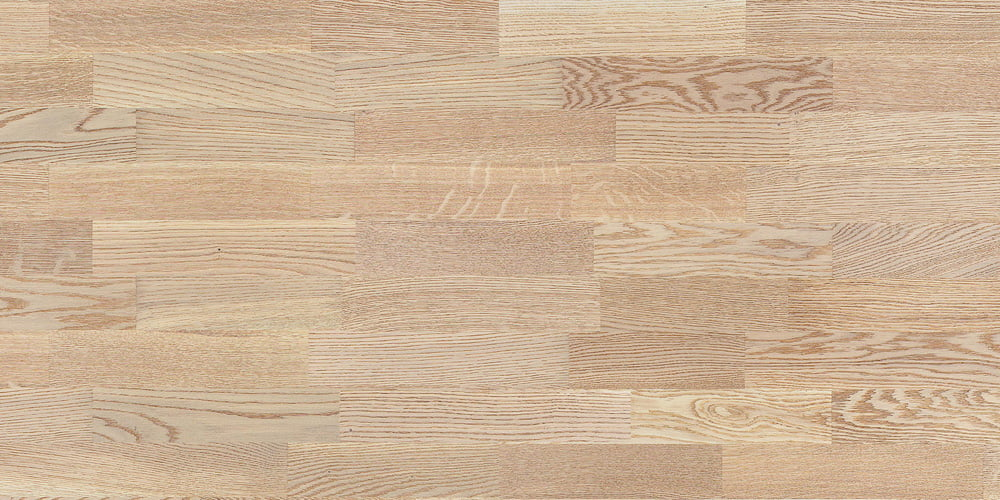
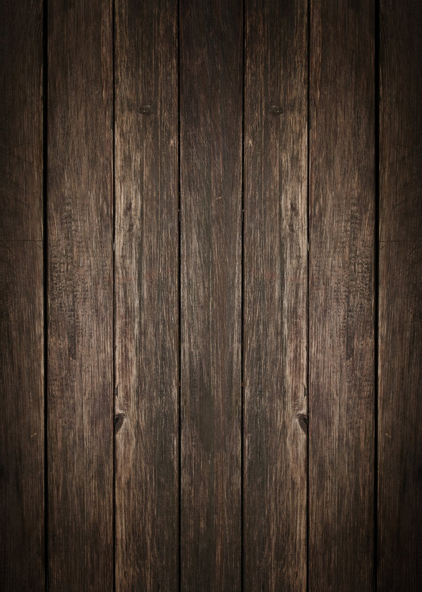
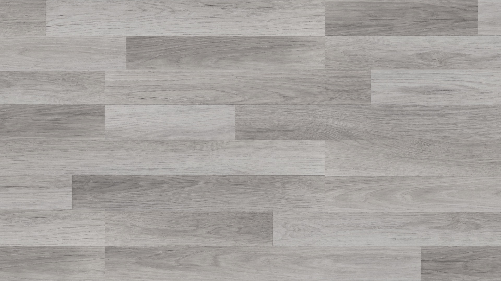
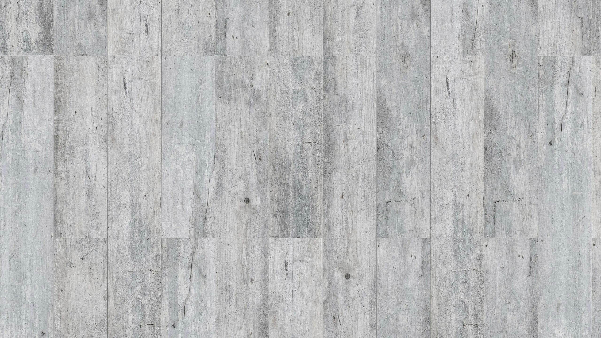

Полезные статьи
О сухой стяжке
Всё, что нужно знать перед ремонтом: от подготовки до экономии.
Честно, по делу, без воды.

Подготовка помещения к монтажу сухой стяжки
Правильная подготовка помещения — залог быстрого и качественного монтажа. Вот что нужно сделать до приезда нашей бригады.
Что нужно сделать
- Освободить комнату — убрать всю мебель, ковры, личные вещи
- Обеспечить освещение — помещение, в котором планируются работы по замене пола, должно быть освещено
- Обеспечить доступ к воде и сантехнике — нам потребуется вода, чтобы разводить штукатурную смесь
- Обеспечить доступ к электросети — для подключения инструмента
- Освободить проход — от входной двери до места, где планируется замена пола (мы будем заносить материалы и выносить демонтаж)
- Защитить двери, полки, технику — демонтаж — дело немного пыльное. Накройте все ценные вещи и мебель пленкой или чем-то подобным
Что делать не нужно
- Демонтировать старое покрытие и плинтуса — это сделаем мы при необходимости
- Демонтировать старый пол — мы производим демонтаж с выносом или вывозом на свалку — по желанию
- Покупать материалы заранее — искать, привозить, поднимать материалы самим нет никакой необходимости, мы привезём всё с собой
Совет эксперта
Если комната заставлена мебелью — мы можем помочь с выносом за дополнительную плату. Предупредите об этом при заказе замера!

Технология Knauf: что такое сухая стяжка?
Сухая стяжка — это современная технология выравнивания пола без использования «мокрых» цементных растворов. Метод позволяет быстро получить ровное, прочное и тёплое основание под ламинат, плитку, линолеум или паркет. В России наибольшую известность получила система КНАУФ (система «суперпол»), которая регламентирована технической документацией производителя и широко применяется в жилых и коммерческих помещениях.
Сухая стяжка пола — это сборная конструкция, состоящая из:
-
Паро- или гидроизоляционной плёнки
Стелится только на первый этаж, т.к. при неожиданной протечке в квартире из-за плёнки на основании может образоваться парниковый эффект.
-
Кромочной (демпферной) ленты
Кромочная (демпферная) лента стелется по периметру. Она предотвращает распространение ударного шума от пола к стенам и способствует микроклимату пола.
-
Сухой засыпки
Сухая засыпка (чаще всего керамзит фракции 0–5 мм) выравнивается по необходимому уровню (не более 10 см без спец. подготовки) с помощью лазерного нивелира и специальных правил. Оставление любых маяков в засыпке не допустимо.
-
Звуко-теплоизоляции
Звуко-теплоизоляция в виде экструдированного пенополистирола монтируется поверх выравненной керамзитной подушки, служит также дополнительным слоем жесткости. Не рекомендуется убирать из «пирога» во избежание локальных «хлопков» ГВЛ о керамзит.
-
Листовых элементов пола (ГВЛ или готовых элементов пола)
Элементы пола Knauf укладываются сверху укрепляющего слоя. Это двухслойная конструкция, состоящая из двух листов ГВЛВ (гипсоволокнистый лист влагостойкий), склеенных со смещением 5 см, образуя замок. В целях удешевления конструкции допускается использование листового ГВЛ, разработанного для стен, в 2 слоя.
Совет эксперта
Сухая стяжка не рекомендуется для помещений с постоянной высокой влажностью (бассейны, душевые без гидроизоляции).

Пошаговая инструкция к самостоятельному монтажу сухой стяжки
Возможно ли произвести монтаж сухой стяжки пола самому? Как это сделать? Какие инструменты понадобятся? На эти и другие вопросы ответим в нашей пошаговой инструкции ниже.
Этап 1: Подготовка основания
Очищается основание от мусора, заделываются крупные трещины и щели. При необходимости укладывается пароизоляционная плёнка. Производится монтаж демпферной ленты по периметру стен для компенсации температурных расширений.
Этап 2: Засыпка керамзита
На основание равномерно распределяется керамзитовая засыпка Knauf. Толщина слоя зависит от перепадов высот (от 2 до 10 см). Мастер выравнивает засыпку по спец. маякам с помощью лазерного нивелира. Маяки после выравнивания убираются.
Этап 3: Укладка звуко-теплоизоляции (слоя жесткости)
На засыпку укладываются листы экструдированного пенополистирола (толщина зависит от необходимой высоты пола) с необходимой по технологии разбежкой швов.
Этап 4: Укладка ГВЛ
На пенополистирол укладываются элементы супер-пола Knauf (двухслойные ГВЛВ плиты — готовая конструкция, разработанная концерном Knauf) с необходимой по технологии разбежкой швов. Замки плит склеиваются между собой с помощью строительного клея и стягиваются спец. саморезами по ГВЛ.
Этап 5: Финишная обработка
Швы между плитами шлифуются и шпаклюются (для мягкого финишного покрытия — линолеум, клеящийся кварц-винил и т.д.). Периметр между ГВЛВ и кромочной лентой промазывается гипсовой штукатуркой.
Советы эксперта
Пароизоляционную плёнку НЕ РЕКОМЕНДУЕТСЯ использовать, за исключением первых этажей. Это может вызвать парниковый эффект и образование грибка и плесени. Не рекомендуется исключать этап 3 из устройства сухой стяжки, это повлечёт локальное хлопанье ГВЛ о керамзит. Заделку швов в этапе 5 можно исключить, если будет уложено твёрдое покрытие — ламинат, плитка, замковый кварц-винил, паркет и т.д.
Пол готов к укладке финишного покрытия на следующий день!
На следующий день можно укладывать большинство финишных покрытий — линолеум, ламинат, кварц-винил, паркет. Перед укладкой плитки советуем выждать естественную микроусадку и акклиматизацию ГВЛ 7–14 дней.
Совет эксперта
Плитку нужно монтировать на специальный плиточный клей с высокой эластичностью. При использовании обычного цементного клея плитка может «отщелкнуться», так как цемент и гипс имеют плохую адгезию. Перед укладкой плитки ГВЛ необходимо тщательно прогрунтовать грунтовкой глубокого проникновения в 2–3 слоя.
Пол готов к укладке финишного покрытия на следующий день! На следующий день можно укладывать большинство финишных покрытий — линолеум, ламинат, кварц-винил, паркет. Перед укладкой плитки советуем выждать естественную микроусадку и акклиматизацию ГВЛ 7–14 дней.

Как сэкономить без потери качества
Если бюджет ограничен, но нужна срочная замена старого, скрипучего пола, есть 5 способов снизить стоимость без ущерба качеству.
-
Оптимальная толщина слоя
Чем меньше слой керамзита, тем дешевле. Если перепады высот небольшие (до 3 см), можно использовать минимальный слой. Наш мастер подскажет оптимальный вариант на замере.
-
Подготовка помещения самостоятельно
Если вы сами демонтируете старое покрытие и выносите мебель — это сэкономит от 500 до 1500 ₽ за м² в зависимости от объёма работ.
-
Заказ от 30 м²
При большом объёме мы даём скидку до 10% на монтаж суперпола. Объединитесь с соседями или сделайте всю квартиру сразу.
-
Постоянные клиенты
Если вы делаете квартиру поэтапно, вы можете использовать скидку на следующий монтаж независимо от метража помещения (до 10% на монтаж — обсуждается при замере).
-
Акции и купоны
Следите за акциями на сайте! Сейчас действует купон на −1000 ₽ за каждые 10 м² при заказе от 20 м².
На чём нельзя экономить
Качество материалов (оригинальные элементы суперпола Knauf, не подделка). Фракция засыпки (не рекомендуется использовать мелкую дроблёнку во избежание неконтролируемой усадки). Опыт мастеров (дешёвые бригады часто нарушают технологию). Гарантия (мы даём 30 месяцев — это ваша защита). Полы прослужат без скрипа всю жизнь.
Максимальная экономия: до 15% от стоимости
Без потери качества: гарантируем!
Нужна консультация или расчёт стоимости?